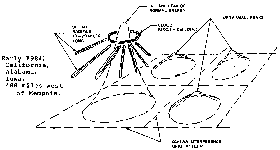

|
Figure 14. FORMATION OF A SINGLE GIANT RADIAL  Excerpt P 172 2. Continual cloud radials have repeatedly been seen and photographed over Huntsville, Alabama, associated with weather engineering and grid activity. Typical radials seen by this author are shown in Bearden, Soviet Weather Engineering Over North America, 1-hr. DVD, 1985. Huntsville is apparently a pivot point or "hinge point" for bending and controlling the jetstream. 3. Spectacular cloud grid patterns have been seen over Huntsville, Alabama and Los Angeles, California. An excellent videoclip of one of the Los Angeles area grids, personally observed and shot by KABC Open Mind talk show host Bill Jenkins, is shown in Bearden, Soviet Weather Engineering Over North America,;1-hr. DVD, 1985. An artist's sketch of an earlier gigantic grid, extending from horizon to horizon in every direction, seen over Huntsville, Alabama by Tom Bearden and Ken Moore, is also shown in the tape. The DVD is available from this website. Sketches and details of another highly anomalous grid pattern observed in the greater Los Angeles area by engineer Ron Cole are shown in figures 5 and 6. The reason that clouds of water droplets and/or ice particles detect the scalar interferometry and form signature patterns is simple: Consider each H2O molecule as having two light little hydrogen atoms hanging on to the much heavier oxygen atom. The covalent sharing with the oxygen atom of the electron from each hydrogen atom means that
Thus the clouds form "signature patterns" according to the incident scalar EM radiation patterns. Giant cloud radials in the targeted area are probably due to the type and shape of antennas including the type and shape of the electrical wires establishing the antennas' ground planes -- used by the Soviet Union to project the scalar waves. Note that such "radial" antenna patterns were occasionally used by James Harris Rogers in his underground and undersea scalar EM transmission system. |